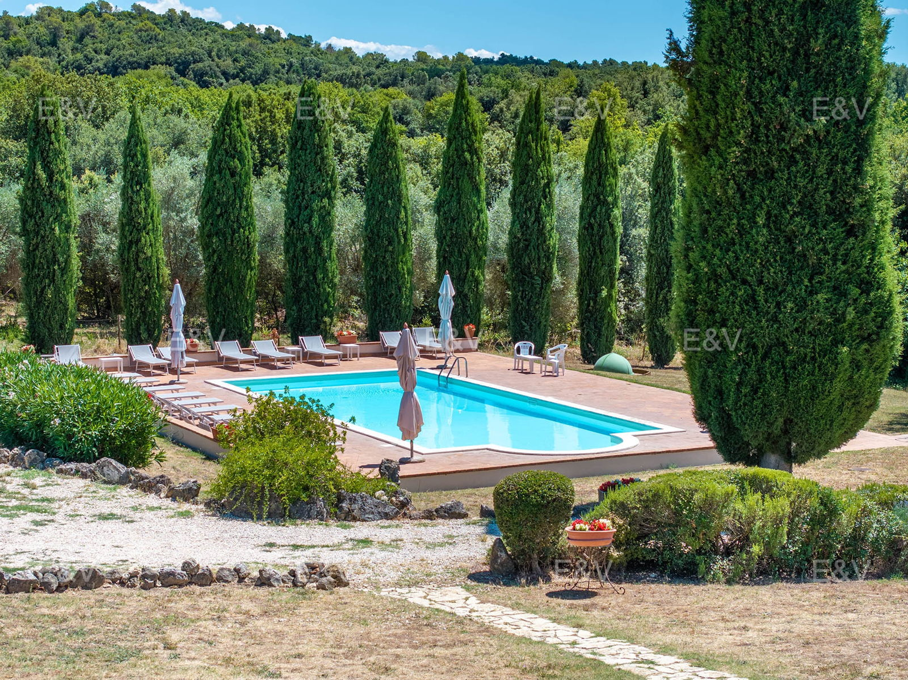

€1.200.000
Narni, Umbria, Italy
Open the listingExclusive stone country compound near Narni with terracotta, iron and exposed beams, five potentially connectable units, clay courtyard, outbuildings and a splendid east–west private swimming pool reached through an olive-grove avenue — strong old-meets-new Umbrian character at the €1.2M cap.
Opened 9 Sep 2026 via E&V expose __NEXT_DATA__ (EN+IT). salesPrice €1200000. 12 bed / 10 bath / ~780 m² / plot 60000. hasSwimmingPool=None. condition=condition.top. Shop=Assisi-Spoleto. Locale Narni. UUID/ref deduped against board + 09-09 existing files.